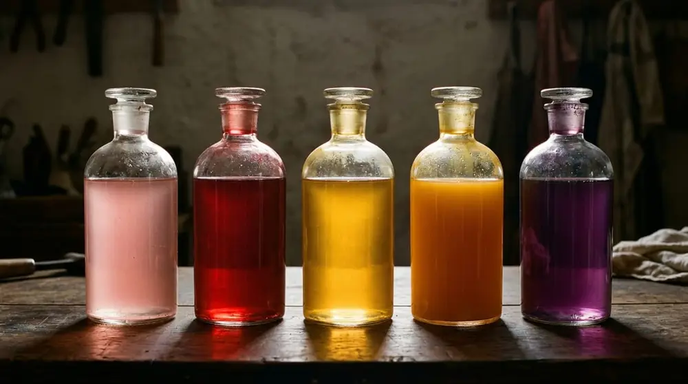
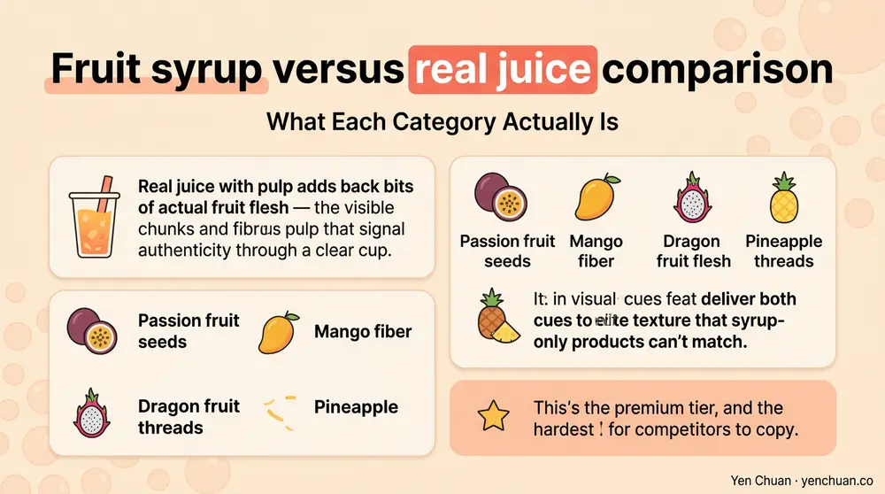
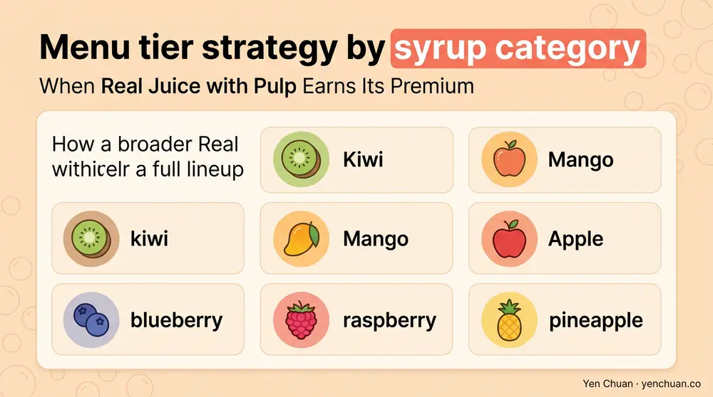

Articles / Business & sourcing
Fruit Syrup vs Real Juice with Pulp | Boba Business Insights
2026-02-10 · Technical Guide, Product Spotlight

Fruit teas and fruit-flavored milk drinks have become the second engine of bubble tea menus, alongside the classic milk tea category. How you build those drinks — flavored syrup, real juice, or real juice with pulp — shapes every variable that matters downstream: flavor authenticity, shelf life, menu pricing, throughput, and the story you tell customers. A 2024 Mintel report on global beverage trends found that 58% of specialty-drink consumers now check ingredient labels before ordering premium drinks, and "real fruit" claims deliver a measurable willingness-to-pay lift. For boba operators working with a fruit syrup supplier for bubble tea, the choice between flavored syrup, real juice, and real juice with pulp is a menu-differentiation lever that compounds over time.
What Each Category Actually Is
The three categories look similar on a price list but behave very differently in the cup.
Flavored syrup is a sugar-based liquid concentrate carrying natural or artificial flavor, color, acidifier, and preservative. The fruit character comes from flavor systems rather than from the fruit itself. Strawberry, passion fruit, lychee, and green apple are the typical SKUs. Costs run low — sometimes 50-60% less per dose than real juice — and flavor is intense and consistent across batches. The trade-off is authenticity: experienced customers can taste the difference.
Real juice is made from single-strength or concentrated fruit juice, sometimes blended with sugar, acidifier, and a small amount of natural flavor to reinforce top notes lost during pasteurization. Fruit solids are removed through filtration, leaving a smooth pourable product. Flavor is closer to fresh-squeezed but still falls short of the eating experience of whole fruit.
Real juice with pulp adds back bits of actual fruit flesh — the visible chunks and fibrous pulp that signal authenticity through a clear cup. Passion fruit seeds, mango fiber, dragon fruit flesh, and pineapple threads all deliver both visual cues and texture that syrup-only products can't match. This is the premium tier and the hardest for competitors to copy.

The Economics: Cost, Yield, and Pricing Power
Flavored syrup wins on raw cost per serving. A typical 2 L bottle at USD $8-12 delivers 60-80 servings, landing at $0.10-0.20 per drink. Real juice runs $0.30-0.60 per serving, and real juice with pulp sits at $0.45-0.90 per serving depending on the fruit — passion fruit and dragon fruit carry the largest premium because both fruits are expensive and hard to pulp-preserve.
On menu pricing, real-juice drinks typically command 15-25% higher menu prices than syrup-only equivalents, and real-juice-with-pulp drinks push another 10-15% above that. Our customers consistently report that the pulp tier carries the most pricing power because customers see the fruit through the cup and recognize the difference instantly.
The throughput consideration matters too. Syrup pours fast and clean. Real juice with pulp needs a wider-bore dispenser and more frequent cleaning cycles to prevent pulp buildup. A busy chain that routes 40% of drinks through pulp SKUs should budget for either dedicated pumps or time to clean shared pumps between drink types.
When Flavored Syrup Still Wins
Flavored syrup earns a permanent slot on most menus despite the authenticity trade-offs. Three scenarios keep it relevant.
First is the baseline-flavor layer. Drinks like green apple soda, blue raspberry slush, or cotton candy milk don't have a natural-juice equivalent that customers recognize. A syrup-only formulation is not only acceptable but expected. Our brown sugar syrup sits in the same category — it's meant to be syrup.
Second is cost-sensitive menu zones. Kids' menus, BOGO promotional drinks, and budget-tier seasonal specials need tight unit economics. Syrup lets operators hit $3.50-4.50 price points that pulp-based drinks can't support.
Third is stability in hot-pour applications. Some fruit pulps break down at steam temperatures; syrup doesn't. Hot fruit tea menu extensions almost always rely on syrup or juice-only formulations for this reason.
When Real Juice (No Pulp) Is the Sweet Spot
Real juice without pulp hits a middle position that works for a lot of operators. It's cheaper than pulp versions by 20-35%, flows cleanly through standard dispensers, and delivers enough flavor authenticity to support "real fruit" menu language. For back-of-house simplicity, juice-only is the workhorse of serious menus.
Our passion fruit juice syrup in the no-pulp line is a good example — intense passion fruit flavor, bright color, and menu-ready consistency that handles high-throughput service without the pulp-management overhead.
When Real Juice with Pulp Earns Its Premium
Real juice with pulp is the go-to when the drink itself is the marketing. The visible fruit content is a photograph waiting to happen, and social-driven menu design almost requires at least two or three pulp SKUs.
Passion fruit with pulp is the highest-volume pulp SKU globally — those black seeds photograph beautifully and deliver a distinctive crunch-pop on the palate. Our passion fruit juice syrup with pulp, dragon fruit juice syrup with pulp, and tropical fruit juice syrup with pulp are the three we see most often in chain signature-drink menus.
The broader real juice with pulp archive covers the full lineup, including kiwi, mango, apple, blueberry, raspberry, and pineapple.

Shelf Life, Storage, and Handling
Flavored syrup has the longest shelf life — typically 24 months unopened, 6-8 weeks opened and refrigerated. Real juice drops to 12-18 months unopened and 2-4 weeks opened. Real juice with pulp is the most fragile: 9-12 months unopened and 10-14 days opened before pulp integrity degrades.
All three categories need refrigeration after opening and should be stirred before each service shift because sugar and pulp separate with time. Pulp-SKU bottles benefit from a gentle inverted rest overnight in the walk-in to redistribute solids; aggressive shaking breaks pulp structure.
The table below captures the operational reality across categories.
| Variable | Flavored Syrup | Real Juice | Real Juice with Pulp |
|---|---|---|---|
| Cost per serving | $0.10-0.20 | $0.30-0.60 | $0.45-0.90 |
| Unopened shelf life | 24 months | 12-18 months | 9-12 months |
| Open shelf life (fridge) | 6-8 weeks | 2-4 weeks | 10-14 days |
| Menu price lift | Baseline | +15-25% | +25-40% |
| Dispenser compatibility | Standard | Standard | Wide-bore or manual |
| Photo/social appeal | Low | Medium | High |
For a broader view of the category, our companion article on summer fruit juice syrups walks through application ideas, and the flavor powders and bases page covers powder formats for menu sections where liquid isn't the right fit.
Building a Tiered Fruit Menu
The working pattern we see in successful chains is three tiers. Value tier uses flavored syrup for kids' drinks, promo pricing, and high-volume crowd-pleasers. Core tier uses real juice for the standard fruit tea and fruit milk tea lineup — this is where most daily volume lives. Signature tier uses real juice with pulp for Instagram drinks, limited editions, and premium-priced items that anchor customer perception of the whole menu.
A new shop often starts with five syrup SKUs and two juice SKUs, then adds pulp SKUs as signature-drink revenue justifies the handling overhead. Existing shops adding pulp tend to see signature-drink mix grow from roughly 15-20% of orders to 28-35% within a quarter of launch, based on the sales data our larger customers share.
About Yen Chuan
Yen Chuan has been at the heart of Taiwan's bubble tea industry for over 20 years, supplying premium powders, syrups, tapioca pearls, and tea leaves to thousands of boba shops worldwide. With an in-house R&D lab and a commitment to quality ingredients, Yen Chuan is more than a supplier — we're your partner in the boba business. Our fruit syrup catalog spans flavored syrups, real-juice lines, and real-juice-with-pulp for operators building menus at every tier — so you can mix categories on one PO and ship them in one container.
Ready to Rebuild Your Fruit Menu?
Looking for a fruit syrup supplier for bubble tea that carries every tier on one catalog? Browse our syrup range or contact our team for samples, spec sheets, and worldwide shipping from Taiwan.
Authority Citations
- Mintel — Global Beverage Trends Report 2024, mintel.com
- Food and Agriculture Organization (FAO) — Fruit Processing Data, fao.org
- Grand View Research — Fruit Juice Market Analysis, grandviewresearch.com
- QSR Magazine — Beverage Menu Trend Reports, qsrmagazine.com
- Statista — Ready-to-Drink Beverage Category Analysis, statista.com
Frequently Asked Questions
Q: What's the difference between fruit syrup and real juice? A: Flavored fruit syrup is a sugar-based concentrate carrying natural or artificial fruit flavor and color, while real juice contains actual fruit juice (single-strength or concentrate) with fruit solids removed through filtration. Real juice delivers more authentic flavor but costs 2-3x more per serving than flavored syrup.
Q: Is real juice with pulp worth the higher cost for a bubble tea menu? A: For signature and premium drinks, yes. Real juice with pulp supports 25-40% higher menu prices than syrup equivalents and delivers strong social-media appeal through visible fruit content. The higher cost and shorter open shelf life make it less suitable for value-tier menu items.
Q: How long do fruit syrups last after opening? A: Flavored syrup keeps 6-8 weeks refrigerated after opening, real juice lasts 2-4 weeks, and real juice with pulp should be used within 10-14 days before pulp integrity degrades. All three categories require refrigeration and regular stirring to prevent separation.
Q: Can I use real juice with pulp in hot drinks? A: Most pulp-based juice syrups are designed for cold drinks. Pulp can break down at steam temperatures and cloud the beverage. For hot fruit teas, flavored syrup or no-pulp real juice is the better choice.
Q: What's the typical MOQ for wholesale fruit syrups? A: Most established suppliers offer carton-level MOQs (6-12 bottles of 2L each) for stock flavors, with volume pricing kicking in at pallet level. Custom formulations — co-branded flavors or brand-specific blends — generally require 500-1,000 L MOQ and 8-12 weeks of R&D before first production.